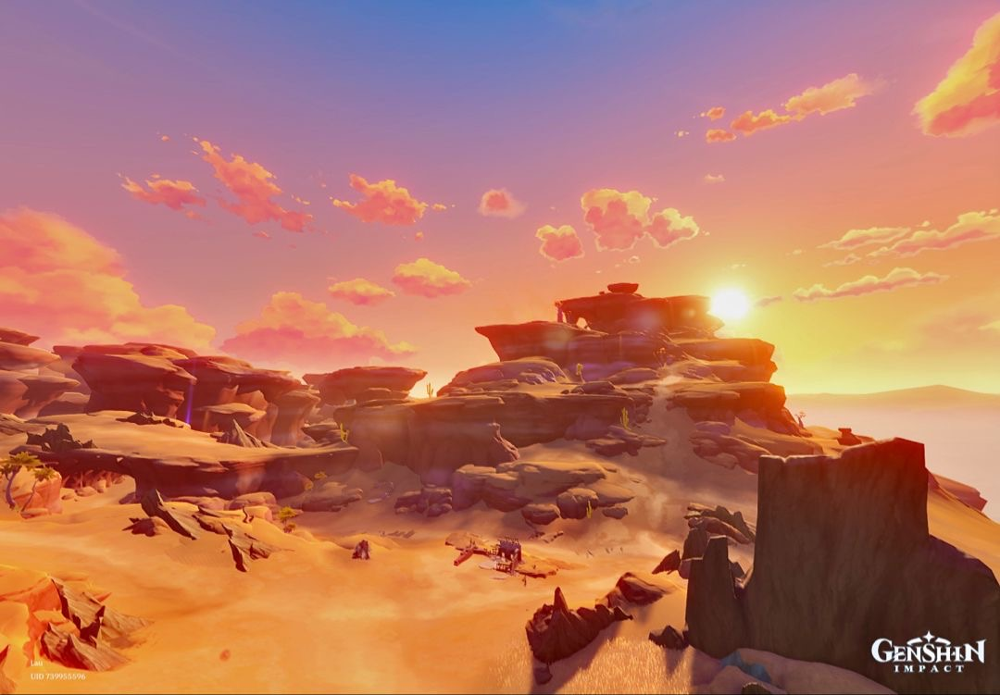

×
Natlan

Natlan is a wild and dangerous land with volcanic landscapes, scorched plains, and rough mountains. Everything about the region suggests constant battle and survival, making it feel intense and full of energy.
Ruled by the Pyro (Fire) Archon Murata, Natlan is known as the nation of war. While not much is revealed yet, it’s clear that strength, honor, and combat play a huge role in daily life. The Pyro element reflects the passion, aggression, and burning spirit of its people.
 Mondstadt
Liyue
Inazuma
Sumeru
Fontaine
Natlan
Mondstadt
Liyue
Inazuma
Sumeru
Fontaine
Natlan